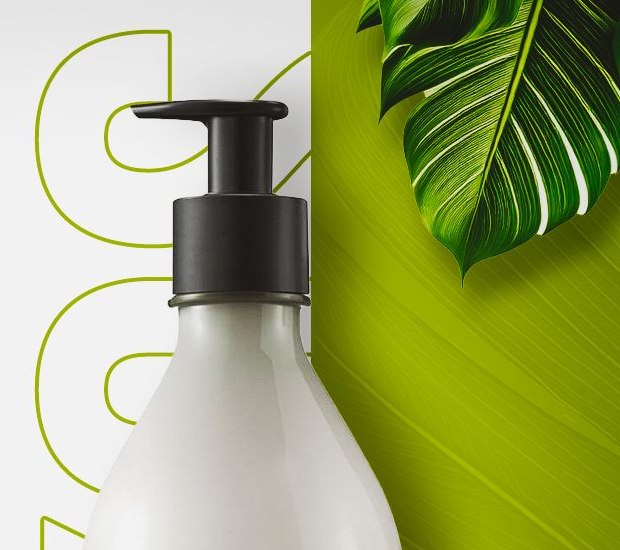

Amazon — Home Redesign
Lineamientos visuales y de tono para el rediseño conceptual del home de Amazon: una versión simplificada de uno de los e-commerce más cargados del mercado.
El concepto
El home actual de Amazon acumula banners, carruseles y bloques de texto compitiendo por atención. Este rediseño parte de una idea simple: menos elementos, jerarquía más clara. Se reduce la paleta a un solo azul de confianza sobre navy neutra, se ordena la tipografía en 3 niveles y cada sección tiene un único propósito (buscar, filtrar, comprar, confiar).
Logo & uso
- Funciona sobre fondo navy (header/footer) y sobre blanco (cards, documentos).
- Mantener un margen de seguridad mínimo equivalente a la altura de la "A" del isotipo.
- Nunca recolorear, rotar ni aplicar sombras al logo.
Paleta reducida
Blue
#0B75FB
Navy
#131921
Price
#3560BD
Background
#FAFBFD
Un solo azul reemplaza la mezcla naranja/amarillo/negro del original: reduce ruido y refuerza la sensación de marketplace confiable. Ver la paleta completa en el Design System.
Tipografía
Plus Jakarta Sans
Headings, navegación, botones y precios. Geométrica y directa — sostiene la jerarquía sin decoración de más.
Rubik
Rating y testimonios. Más redonda y cercana, para la voz de los clientes reales.
Tono de voz
Usamos
- "Todo lo que necesitas en un solo lugar" — directo, en segunda persona.
- "Completa los datos" / "Filtrar" — instrucciones cortas, un verbo por acción.
- "¡Pide ya!" — urgencia puntual, solo en promos, nunca en navegación.
Evitamos
- Mayúsculas sostenidas o múltiples signos de exclamación.
- Más de un CTA compitiendo por atención en la misma sección.
- Tecnicismos de e-commerce (SKU, checkout) en cara al usuario.
Imaginería



Fotografía de producto sobre fondo neutro, mismo encuadre y proporción 1:1 en todo el grid. Fotografía de personas siempre en contexto real de uso (nunca stock genérico posando a cámara).
Antes / Después
Amazon original
Decenas de carruseles apilados sin jerarquía clara, mezcla de tipografías y colores compitiendo por atención, CTAs repetidos por toda la página.
Este rediseño
Una acción principal por sección, un solo acento de color, tipografía consistente en 3 niveles y espacio en blanco real entre bloques.